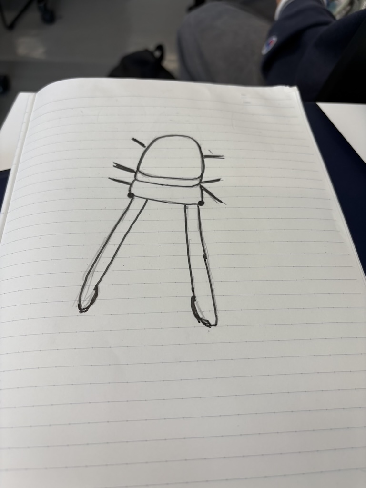
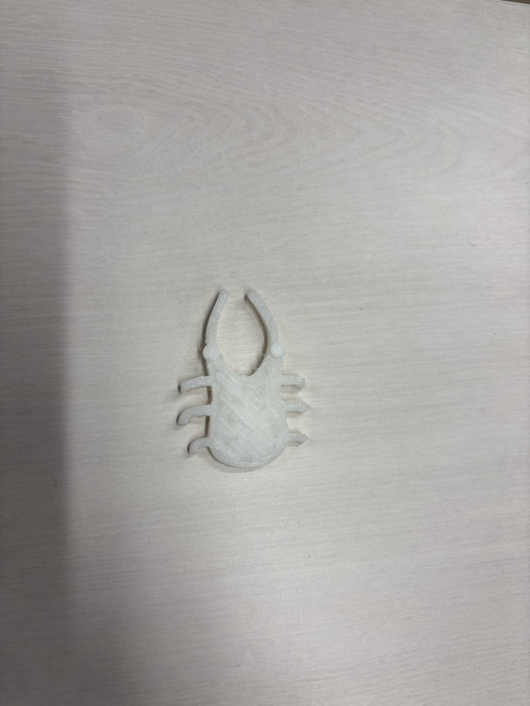
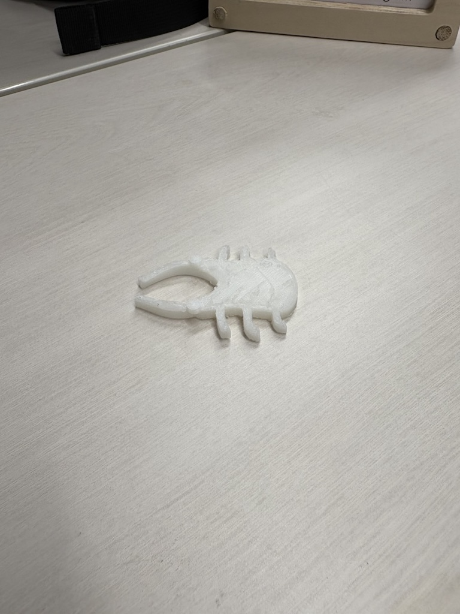
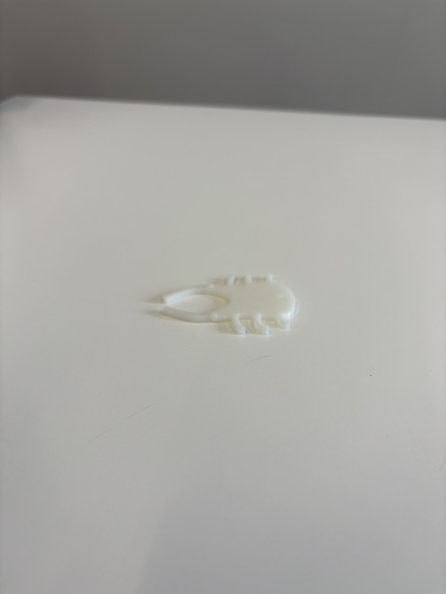
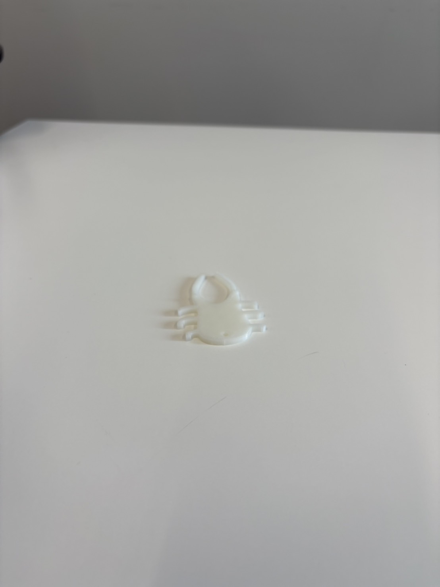
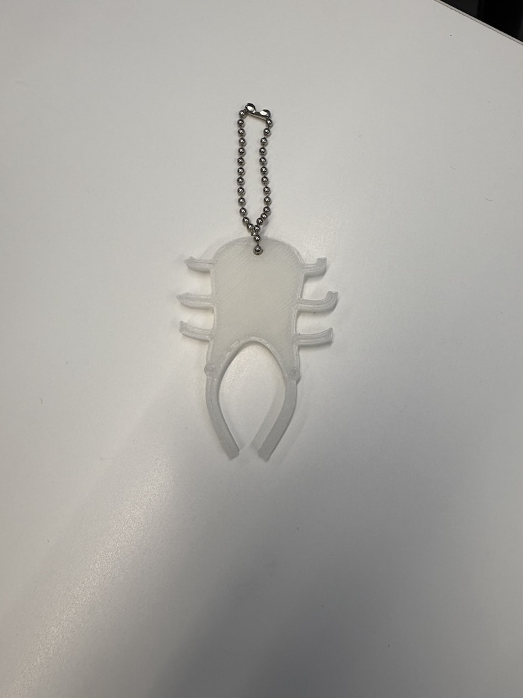

第1回デジタルファブリケーション課題
クワ型ピンセット
第一回の課題はピンセットを進化させる
作品名 クワ型ピンセット
クワガタの形をした見ても面白いピンセットを作りました。
構想段階

出来上がった作品


設計ファイル
クワ型ピンセット
この作品について
普段目立つことのないピンセットがちょっと可愛く、作品として目につくように進化！
子供が興味を持って手に取りやすいようなデザイン。
なぜこの作品を作ろうと思ったのか
子供の時にピンセットを使った覚えがない?
子供でも簡単に手に取りやすいようにクワガタと組み合わせたら子供も手に取りやすいのではないかと考えた。
反省点
素材の感じがわかっていなかったためピンセットの機能性が不十分。
子供が持っていたらすぐになくしてしまうのでは？
新しく改良してみよう！
無くさないように穴を開けてキーホルダーのようにしてみたらいいのではないか。
薄くしてピンセットの機能をできるようにする。
出来上がった作品



設計ファイル
改良版クワ型ピンセット
クワ型ピンセットができること
・キーホルダーのようにカバンなどにつけることができる
・キーホルダーとしてつけていれば無くすことがない
・ピンセットだから物をつまむことができる
このピンセットの強み！
子供向けに作っているため、転んでしまったり、色々なものに触れるため手や足などに棘が刺さってしまったり、石が入ってしまったりしても
キーホルダーとしてつけていればすぐにピンセットを使い取り除くことができるようになっている！
制作プロセスの中で調べたこと
反転したかったのでこちらを参考にしました。
実際に使用している様子